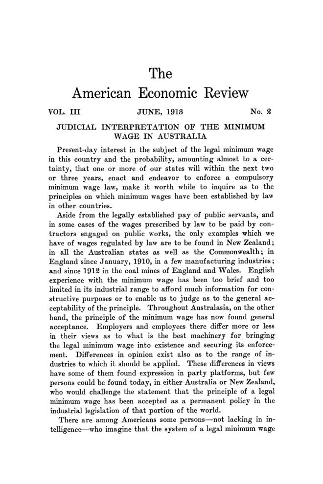

Hammond, 1913: como os juízes australianos definiram o salário mínimo
Leitura: 9 min
M. B. Hammond reconstrói o critério com que os tribunais da Australásia fixavam o salário mínimo: as necessidades normais do trabalhador, apuradas em orçamentos domésticos, antes da capacidade da indústria.


Em Broken Hill, no deserto australiano, a água de beber era comprada de carroças à porta, a um preço mais de doze vezes maior que o de Melbourne. As casas de ferro galvanizado eram fornos no verão e geladeiras no inverno, não havia fruta nem verdura frescas, e o único leite era o de lata. Esses detalhes saíram de um processo de 1909, no qual o tribunal federal de arbitragem da Austrália apurou o custo de vida da cidade mineira para decidir se a maior empresa local podia reduzir salários. M. B. Hammond, da Ohio State University, conta o caso no número de junho de 1913 da American Economic Review.
O artigo tem um destinatário claro. Para Hammond, era quase certo que um ou mais estados americanos aprovariam leis de salário mínimo nos dois ou três anos seguintes, e convinha saber em que princípios elas se apoiavam onde já existiam. Fora da Australásia, havia pouca experiência: a Inglaterra aplicava o mínimo a algumas indústrias desde janeiro de 1910 e às minas de carvão desde 1912. Na Nova Zelândia e na Austrália, diz o autor, o princípio já fora aceito como política permanente.
O que era, afinal, o salário mínimo australiano?
Hammond desfaz primeiro um equívoco. O mínimo não era uma quantia fixada em lei para todos os trabalhadores. As leis de fato fixavam pisos, mas ínfimos: 2s. 6d. por semana em Victoria, 4 xelins em Nova Gales do Sul e na Austrália Meridional, 5 xelins na Nova Zelândia. Serviam para coibir a prática de empregadores do ramo do vestuário que tomavam crianças como aprendizes sem pagar nada e as dispensavam quando os pais pediam salário.
O mínimo relevante vinha de dois mecanismos. O primeiro eram as comissões salariais, os wages boards, adotados em Victoria desde 1896: uma conferência obrigatória de empregadores e empregados de cada ofício, com presidente imparcial e voto de desempate, cujas decisões, publicadas na gazeta oficial, obrigavam todo o ramo. O modelo foi seguido pela Austrália Meridional, por Queensland e pela Tasmânia. O segundo eram os tribunais de arbitragem compulsória, iniciados pela Nova Zelândia em 1894 e adotados por Nova Gales do Sul, pela Austrália Ocidental e, em 1904, pela Comunidade australiana. Pensados para evitar greves, esses tribunais acabaram fixando salários, porque resolver um conflito exige dizer em que termos o trabalho continua.
Nas comissões salariais, Hammond não encontra princípio: há barganha. Nas reuniões a que assistiu, o argumento mais usado pelos trabalhadores era o custo de vida; os empregadores respondiam que o ramo não suportava o aumento, e os trabalhadores perguntavam se não era possível repassá-lo ao consumidor. Já o juiz, cujas sentenças seriam citadas nos casos seguintes, precisa de um critério. As leis quase nunca o forneciam. Higgins, presidente do tribunal federal, lamentou que o legislador mandasse fixar salários “justos e razoáveis” sem dizer por qual medida.
Como Higgins chegou ao salário vital?
Os primeiros juízes hesitaram. Um falava em permitir que o ofício continuasse funcionando; outro em levar em conta as condições do ramo; a ideia de salário com participação nos lucros chegou a ser cogitada e foi abandonada, porque exigiria salários diferentes por empregador. Aos poucos, segundo Hammond, todos convergiram para as necessidades do trabalhador. Já em 1902, um juiz neozelandês considerava o custo de vida de Auckland ao fixar o salário dos carpinteiros.
A formulação mais clara veio no caso Harvester, de 1907, julgado sob a lei de tarifas de 1906, que isentava de um imposto de consumo os fabricantes de máquinas agrícolas que pagassem salários “justos e razoáveis”. Higgins raciocinou que a cláusula só fazia sentido se garantisse algo que a barganha individual, com a pressão do pão de um lado e a do lucro do outro, não garantiria. Não encontrou outro padrão senão as necessidades do trabalhador.
“as necessidades normais do empregado médio, visto como ser humano vivendo numa comunidade civilizada” (“the normal needs of the average employee, regarded as a human being living in a civilized community”)
Para apurá-las, ouviu esposas de operários e outros sobre gastos com comida, moradia e combustível, conferiu os números com corretores e comerciantes e ofereceu à empresa a chance de contestá-los. As despesas indispensáveis de uma casa de cerca de cinco pessoas somavam £1 12s. 5d. por semana. A empresa pagava 36 xelins; sobravam 3s. 7d. para roupa, móveis, transporte, seguro, doença e todo o resto. Higgins fixou 7 xelins por dia.
O critério tinha desdobramentos. No caso dos taifeiros de navios, Higgins descontou do salário o valor da cama e da comida e as gorjetas, porque os cozinheiros, que não recebiam gorjetas, seriam tratados com injustiça; acrescentou, porém, 10 xelins mensais pelo uniforme e pelas obrigações de aparência. Hammond estranha que a base de 7 xelins não tivesse mudado desde 1907, apesar da alta do custo de vida. O juiz lhe disse que aceitaria um inquérito oficial bem feito sobre o tema, e o estatístico do governo, G. H. Knibbs, pedia recursos para fazê-lo.
E os qualificados, as mulheres e os tarefeiros?
Para os qualificados, o método era somar ao salário vital um adicional pela habilidade, guiado pelas proporções que os próprios empregadores praticavam. Se a fábrica pagava 6 xelins ao trabalhador comum e 8 ao laminador de chapa, Higgins elevava o primeiro a 7 e o segundo a 9, conservando aproximadamente a proporção. Hammond acha esse o princípio correto, mas registra que o hiato entre qualificados e não qualificados era menor na Austrália que nos Estados Unidos, e que juízes e empregadores duvidavam de que bastasse para levar os pais a pôr os filhos num ofício. No trabalho por peça, convertiam-se os preços em ganho diário de um trabalhador médio; na tosquia, o resultado foi de 24 xelins por cem ovelhas.
No caso das mulheres, nas plantações irrigadas de Mildura e Renmark, os sindicatos pediram salário igual para trabalho igual. Higgins aceitou para a colheita, em que a maioria dos trabalhadores era de homens e os dois sexos concorriam: 1 xelim por hora, e o empregador escolheria livremente. Para o empacotamento, trabalho essencialmente feminino, fixou 9 pence por hora, supondo que a trabalhadora sustentasse a si mesma, mas em geral não uma família.
Onde ficava a capacidade da indústria?
O ponto mais polêmico era o que fazer quando a empresa não podia pagar. No caso Broken Hill, a mineradora, que empregava mais de 4 mil homens, alegou que, com o minério e o preço dos metais da época, só valeria a pena operar a mina por mais dois anos e meio, e que o corte de salários transformaria prejuízo em lucro. Higgins respondeu que, se um empreendimento não se sustenta sem reduzir os salários essenciais à subsistência, é melhor abandoná-lo; outros juízes australianos haviam dito o mesmo. Admitiu a possibilidade de a mina fechar.
“seria uma calamidade ainda maior que homens fossem subalimentados ou degradados” (“it would be a still greater calamity that men should be underfed or degraded”)
Acima desse piso, porém, a prosperidade da indústria contava. No caso dos calçados, a concorrência entre estados e a importação contiveram os salários dos qualificados. Higgins distinguia a capacidade de uma indústria da de um empregador: seria loucura, dizia, fixar salário menor para o patrão desleixado do que para o rival eficiente. Insistia em deixar o empregador livre para escolher seus homens, e só uma vez concedera preferência aos sindicalizados, diante de um gerente que discriminava os membros do sindicato. Hammond atribui sua impopularidade entre empregadores mais à aspereza de tom do que às sentenças, e conclui, depois de ler todas elas e conversar com o juiz, que ele não mostrava parcialidade e que seus princípios eram fundamentalmente sólidos.
Na minha leitura
Na minha leitura, o artigo mostra como um conceito vago, o salário justo, ganhou conteúdo operacional. Higgins não resolveu a questão pela teoria do valor nem pela produtividade marginal; resolveu-a com orçamentos domésticos, preços de varejo e aluguéis, apurados como prova num processo. O piso deixa de ser opinião e vira número contestável, com metodologia exposta.
O custo desse caminho também aparece no texto. Uma vez fixado, o número tende a ficar parado à espera de prova melhor, e a alta do custo de vida corrói o salário vital enquanto o tribunal aguarda um inquérito oficial. E a separação entre a parte do salário que é para viver e a parte que remunera habilidade ou escassez, que Higgins queria tão nítida quanto possível, é justamente a fronteira que os debates sobre salário mínimo ainda tentam traçar.
Glossário
- Wages board
- comissão de empregadores e empregados de um ofício, com presidente imparcial, que fixa salários e jornadas obrigatórios.
- Arbitragem compulsória
- sistema em que um tribunal decide os conflitos trabalhistas e suas sentenças obrigam as partes.
- Salário vital (living wage)
- salário suficiente para as necessidades normais de um trabalhador e de sua família.
- Caso Harvester
- decisão de Higgins de 1907 sobre um fabricante de máquinas agrícolas, que fixou o padrão de 7 xelins por dia.
- Regra comum (common rule)
- extensão de uma sentença arbitral a todos os empregadores de um ofício na jurisdição do tribunal.
- Preferência a sindicalizados
- cláusula que obriga o empregador a contratar de preferência membros do sindicato.
Fontes
- Judicial Interpretation of the Minimum Wage in Australia — M. B. Hammond (Ohio State University) (pp. 259–286). JSTOR · Internet Archive (PDF)
- Edição completa, com os demais artigos: Nº 124 do Arquivo.
Documento em domínio público (EUA, publicado antes de 1931), via JSTOR Early Journal Content e Internet Archive. Resumo e comentário do autor deste site, sem afiliação com a American Economic Association. Encontrou um erro? Escreva: a correção é publicada no próprio texto, com data.
↑ Nº 124 · Junho de 1913: o salário mínimo australiano e a pensão como salário DeRoode, 1913: a pensão como salário adiado →